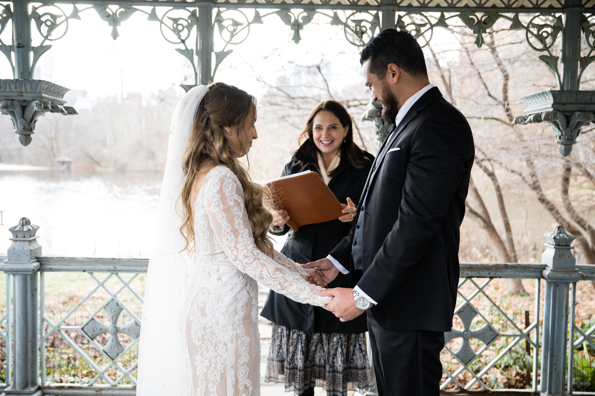
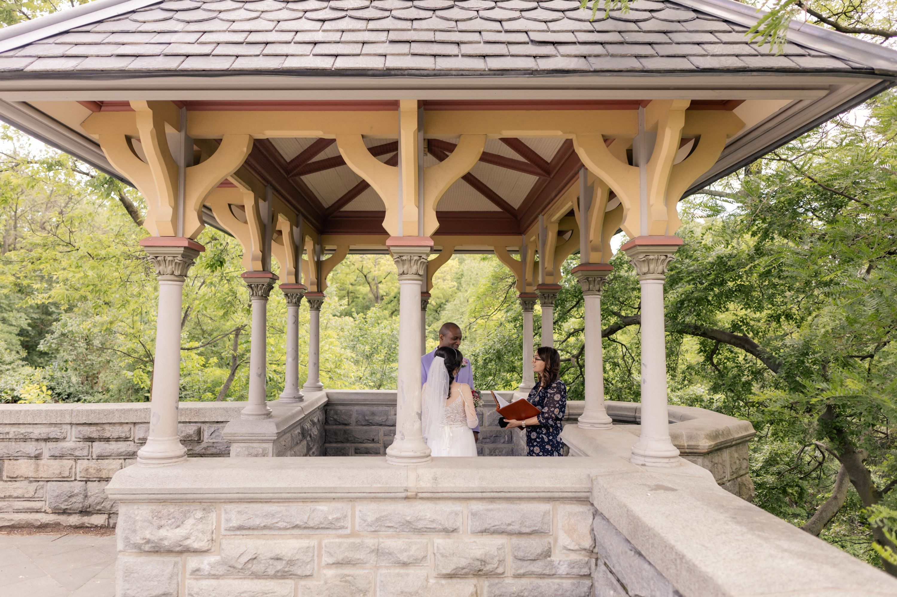
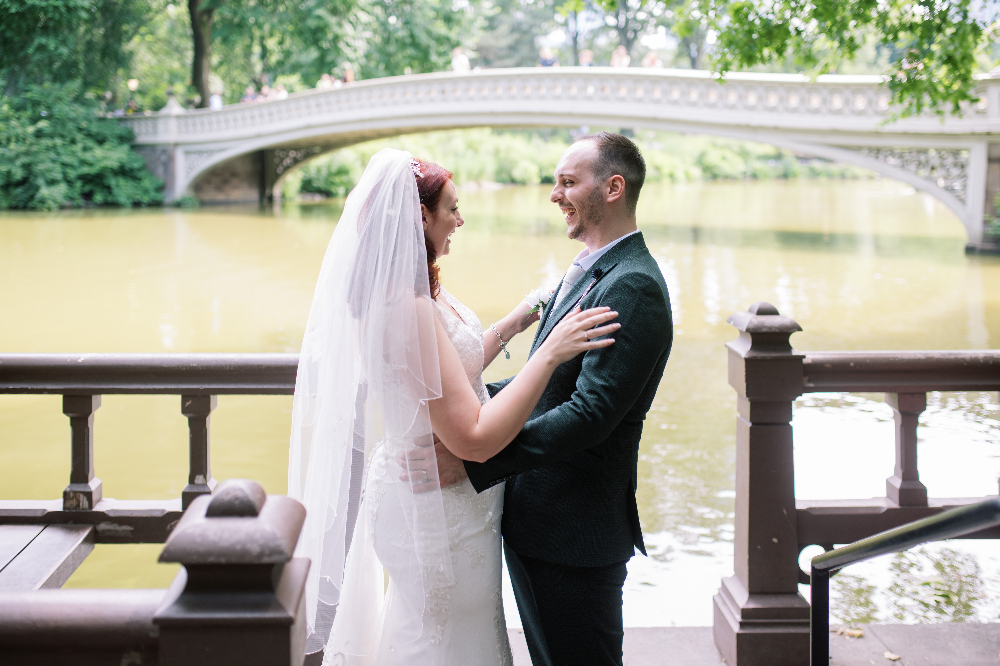
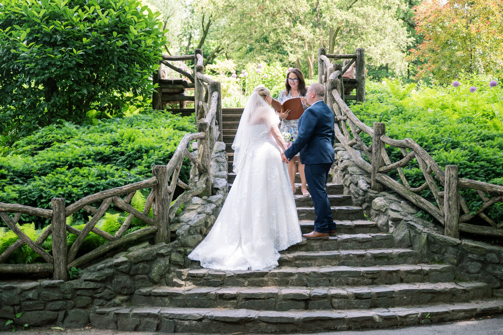
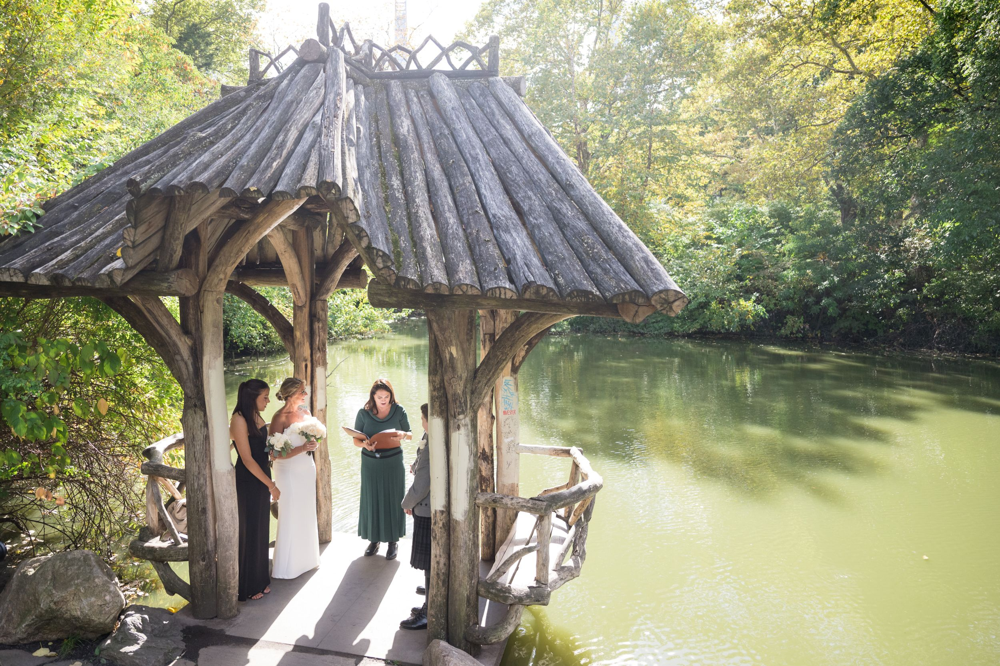

Ladies Pavilion
Located at Hernshead on the western shore of The Lake in Central Park at West 75th Street, The Ladies Pavilion is an ornate, Victorian-style cast-iron shelter. Designed by Jacob Wrey Mould in 1871, it features a slate roof and decorative ironwork. It is a highly popular, romantic spot for intimate weddings. Permit required.

Belvedere Castle
Above Shakespeare Gardens sits the iconic Belvedere Castle. If you want a romantic castle type structure then Belvedere Castle is the perfect spot! You can exchange vows on the castle’s balcony overlooking the Manhattan Skyline. It is a busy tourist spot so maybe not the location if you want complete privacy! Permit required.

Bow Bridge
A short walk from Bethesda Terrance, the Bow Bridge is an iconic location for weddings, or even just photos with the Upper West Side behind you. You can get married on the bridge, however I recommend a landing to the West of it. Permits not required so first come first served. Be prepared for lots of cheering from spectators on the bridge when you have that first kiss! Permit Required.

Bow Bridge Landing
A small wooden structure on the lake with the Bow Bridge as a stunning backdrop. Suitable for very small elopements. No permit required.

Shakespeare Garden
Heading in from the West side, near the Museum of Natural History, Shakespeare Gardens is a beautiful themed garden that changes with each season. It sits on four acres on a steep incline so bear that in mind for certain guests. Above it is the Beautiful Belvedere Castle. Permit required.

Wagner Cove
Heading East from Central Park West and 72nd, Wagner Cove is one of my favorite locations in the Park. It is a hidden gem. It is a wooden structure tucked away in the corner of the lake. It provides shade and its small size is incredibly romantic. Permit required.

Gapstow Bridge
At the north east end of the pond lies another iconic bridge made in 1896 from local stone in the heart of the Park. Similarly to Bow Bridge it is a heavily populated bridge but you can get married with the Bridge as a stunning backdrop or stunning New York City skyline views. Permit required.

Cop Cot
Located near 59th and 6th Avenue, Cop Cot is the perfect wedding venue if you have a larger crowd for your wedding. It is situated on top of a small hill (bear in mind for certain guests), It features a large wooden gazebo with built-in bench seating. It offers a private, intimate atmosphere with beautiful, natural, and urban, year-round scenery. Permit required.

Dene Treehouse
Located between 67 and 68th street and Fifth avenue is the Treehouse for Dreaming (also known as the Dene Summerhouse). Treehouse for Dreaming is another spot that is a beautiful vine covered gazebo with a natural, boho type atmosphere. It is secluded and offers beautiful views. Similarly to Cop Cot, the Treehouse offers bench seating for guests, however it is not suitable for guests with walking difficulties. No permit required but suggest guests arrive early to seclude the spot.